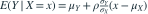

服从二维正态分布，，，，，相关系数为 0.5。则 为多少？A2.5B3.0C4.0D3.5我已思考，展开答案与解析正确答案：D二维正态的条件均值为 。代入得到 。易错提醒公式中的比值是标准差之比，不是方差之比。原模拟卷 A · 模拟卷 A 第 18 题原创
 服从二维正态分布，
服从二维正态分布， ，
， ，
， ，
， ，相关系数为 0.5。则
，相关系数为 0.5。则  为多少？ 服从二维正态分布，，，，，相关系数为 0.5。则 为多少？
为多少？ 服从二维正态分布，，，，，相关系数为 0.5。则 为多少？